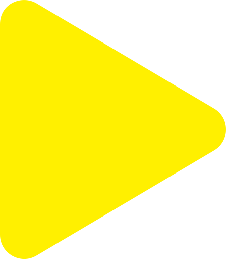

Livestreaming from Venice: Moving Off the Land II
·
Next Event
Ocean Archive
Under Construction
Under Construction
Joan Jonas
Moving Off the Land II
Mar 24 - Sep 29, 2019
OCEANSPACE
Chiesa di San Lorenzo
Venezia, Italy
Moving Off the Land II
For the inaugural public project at the Ocean Space, TBA21–Academy is proud to present an immersive multi-media installation by the acclaimed artist Joan Jonas, the culmination of three years of intensive research and explorations with the itinerant academy. Curated by Stefanie Hessler, and on view from 24 March until 29 September 2019, Moving Off the Land II will occupy 500 square metres of what was once the nave of the church of San Lorenzo and will be activated by Jonas with a live performance on 7 May 2019, coinciding with the opening of the 58th Venice Biennale.
Joan Jonas is one of the most renowned artists of her generation. She is celebrated as a pioneer of performance and video art since the 1960s, a time when art was leaving the confines of the gallery space, converged with dance, music, and theater and tackled complex questions surrounding our relationship with the environment. For her latest work, Jonas has devised a large-scale installation that deconstructs and translates her mesmerizing performance Moving Off the Land (2016–ongoing). The exhibition includes video, sculpture, drawing, and sound, centring on the oceans as a totemic, spiritual, and ecological touchstone. The performance was commissioned by TBA21–Academy and first presented in parallel to the 2016 Kochi – Muziris Biennale, and again in collaboration with Tate Modern at the Turbine Hall in 2018. As is often the case in Jonas’s work, the performance has grown and morphed since its first iteration.
Jonas’s new work dives deep into the oceans, swims with the fish that inhabit the world’s hydrosphere, and turns to literature and poetry by writers who have homed in on the liquid masses that cover two thirds of the planet. Following the methodology that has gained her lauded reputation, Jonas combines prose by writers like Emily Dickinson and Herman Melville with texts by Rachel Carson and Sy Montgomery, and with moving images filmed in aquariums around the world, as well as at the coast of Jamaica, where algae blooms and overfishing pose urgent threats to the environment. Employing her own voice, as well as music by the celebrated composer and drummer Ikue Mori and by the acclaimed musician María Huld Markan Sigfusdottir, Jonas creates an evocative, poetic, and spellbinding experience.
Over many years, Jonas has visited and recorded footage in aquariums around the world. In the last year and a half, as part of a sustained dialogue about their respective work, the marine biologist and coral reef and photosynthesis expert David Gruber has shared with Jonas his captivating underwater recordings that focus on bioluminescence. In 2018, Gruber visited Jonas at her summer home in Cape Breton, Canada, where he shot footage of Jonas’s dog, Ozu, on the shoreline.
Moving Off the Land II is commissioned by TBA21–Academy and co-produced with Luma Foundation.
OCEAN SPACE
The exhibition at Ocean Space is the first in a series of shows, performances, symposia, concerts, screenings, and other events organized by TBA21–Academy that explore the oceans from different perspectives over the course of the coming years. For March 2019, Office for Political Innovation by Andrés Jaque collaborated with Joan Jonas to create an initial interior platform that forms the setting for Moving Off the Land II a performance space in part of the church.
OCEAN ARCHIVE
As a digital extension of Joan Jonas’s exhibition, Ocean Archive, a project initiated by TBA21–Academy and currently under construction, will publish a selection of complementary material, including an exclusive interview with Jonas, videos of related works, and additional materials that have influenced and informed the exhibition in Venice. Ocean Archive is a digital colaboratory operating at the intersection of scientific inquiry, artistic intelligence, and environmental advocacy. Created by TBA21–Academy, the platform will host materials related to Academy expeditions, exhibitions, and public events and integrate these into a curated selection of additional ocean-related art, scholarship, and information about policy and conservation efforts. Designed to facilitate discovery, cooperation, and knowledge co-production, Ocean Archive is currently being developed by User Group for TBA21–Academy and will be launched at the Ocean Space in September 2019.

JOAN JONAS TRAILER
JOAN JONAS TEXT
OCEAN ARCHIVE TRAILER
LIVESTREAM